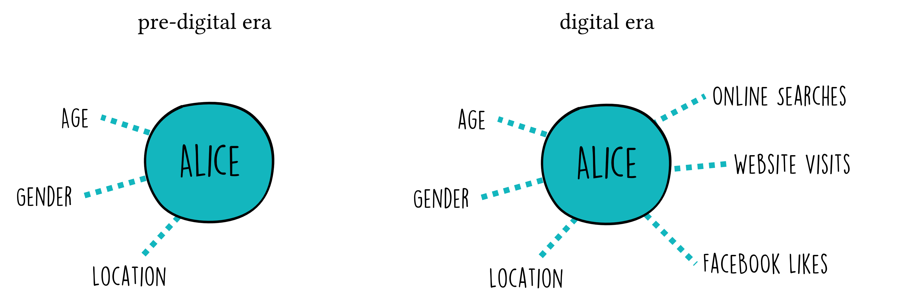
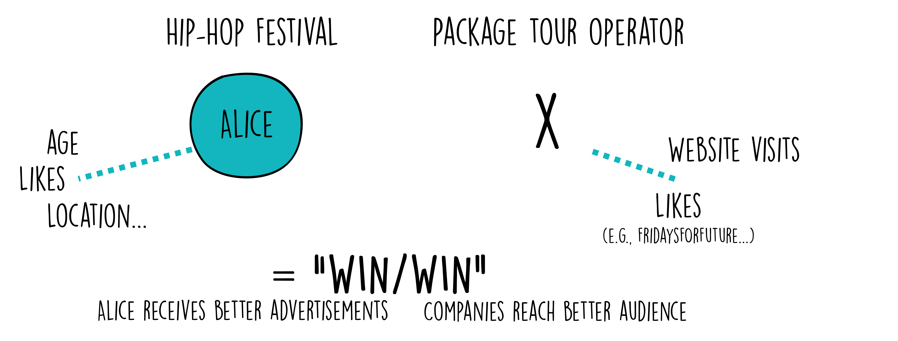
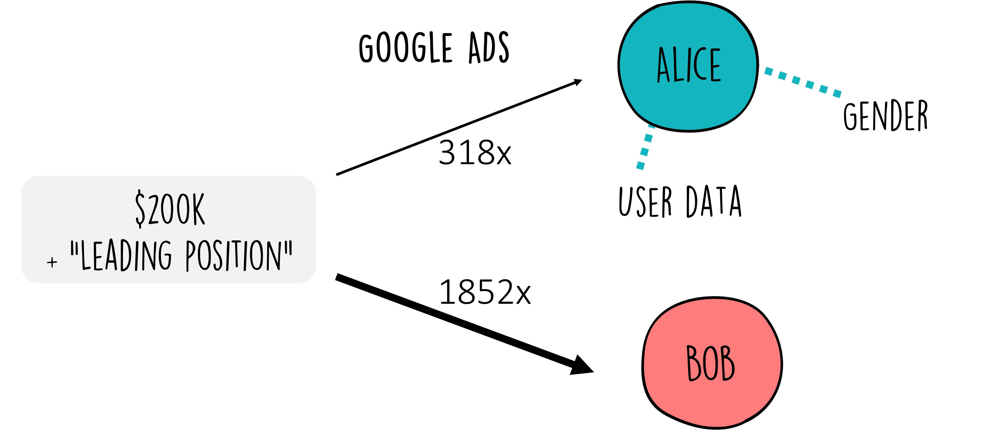
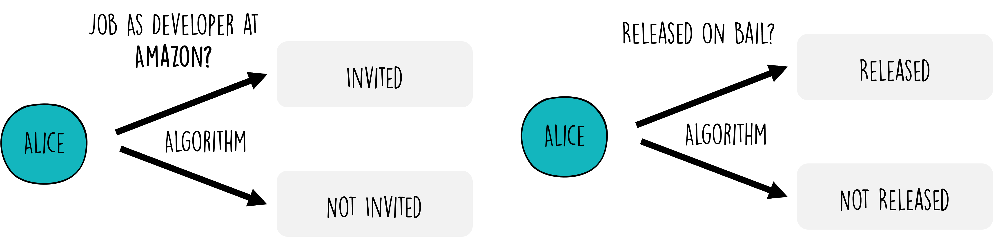

Data Science, Ethics, and Society#
In an increasingly data-driven world, the role of data science extends far beyond pure analysis and prediction. The data we collect, the models we build, and the decisions we support are all connected to ethical questions and broader societal consequences. The power of data science to influence and shape our world is vast, and, as the Spider-Man quote goes: “with great power comes great responsibility” (see wikipedia).
It is easy to recognize the importance of ethics in situations that directly involve life-and-death decisions, such as medical diagnosis or autonomous driving. But ethical issues arise much earlier and much more often than that. They appear whenever data is collected, categorized, analyzed, and used to influence people or institutions. This includes, for example, analyzing online behavior, evaluating job applicants, studying internal company processes, optimizing political campaigns, allocating public resources, or communicating scientific findings.
A useful starting point is this: data science is never only technical. It always involves choices. What data should be collected? Which patterns matter? Which outcomes should be optimized? Who benefits from a system, and who might be harmed by it? Who is responsible when something goes wrong?
In this sense, ethical reflection in data science often revolves around a few central questions:
Privacy and consent: What data is collected, and did people meaningfully agree to its use?
Fairness and discrimination: Are some groups systematically disadvantaged?
Transparency and explainability: Can people understand how decisions are made?
Accountability: Who is responsible for the consequences of a model or system?
Human oversight: When should humans remain in control of important decisions?
Societal impact: How do data-driven systems shape institutions, behavior, and power?
Let us begin with a case that might at first seem rather harmless: advertising. After all, what does it really matter if you propose a website user a red or a green pair of shoes, right?
Let’s look at some examples#
Targeted Advertisement - good, bad, neutral?#
Even before the digital revolution, targeted advertising was a commonly used strategy. Companies used general demographic information such as age, gender, and location to tailor their messages to different audiences. But with the rise of the internet and digital platforms, targeted advertising has changed fundamentally. Today, ads are often shaped not only by broad demographic categories, but also by detailed behavioral data: search histories, clicks, purchases, browsing patterns, location histories, and social media activity Fig. 3.

Fig. 3 Targeted advertisement can nowadays use much more data and information on a potential customer (here: Alice) when compared to pre-digital times.#
You may already be feeling a touch of unease. Is it truly beneficial for companies or other organizations to have access to all this data? On the flip side, consider this: isn’t it a win/win situation? Companies reach a more relevant audience, and users receive advertisements that are more closely matched to their interests. Take, for example, Alice (Fig. 4). Because of her age (neither too young nor too old), location (within 2 hours of the festival venue), and interests (many likes for Hip-Hop bands), she receives an advertisement for a Hip-Hop festival. This offer is a clear match for her. However, Alice wouldn’t get a mail catalog for a package tour operator catering to a different customer profile—typically older and, let’s say, less concerned about the carbon emissions of their tours. That’s a plus for Alice. And a plus for both companies, isn’t it?

Fig. 4 In many cases, target advertisement does little harm. It might even seem like a win/win situation at first.#
But even this apparently simple example raises important ethical questions. How much data should companies be allowed to collect? Do users really understand what is being tracked about them? Can personalized advertising become manipulative rather than merely relevant? And what happens when the advertised product or inferred trait is sensitive?
Let’s take the example of maternity wear. Suppose a company uses data science to detect early signs of pregnancy, like changes in online shopping behavior. They might then start sending ads for maternity clothes. This could potentially lead to uncomfortable or even harmful situations (Fig. 5).
For instance, what if the individual hasn’t yet told their family or friends about the pregnancy? [1] Or, in a more distressing scenario, what if the pregnancy is unwanted, or complications arise? In such cases, receiving maternity ads could cause emotional distress. And it’s not limited to maternity products; this applies to any sensitive product or service.
Fig. 5 But even advertisements can quickly turn into ethically much more complicated matters.#
And what if the advertisement is not a product in a classical sense, but a high-paying job?
From Consumer Preferences to Career Opportunities#
The step from product advertisements to job advertisements may seem small, but the consequences are much more serious. While consumer ads influence what people might buy, job ads can influence people’s professional opportunities, financial situation, and long-term career paths.
A well-known study using the AdFisher tool examined how online advertising systems responded to different user profiles and found that setting a profile to “female” led to fewer ads for high-paying jobs than setting it to “male” [Datta et al., 2015] (Fig. 6). This is ethically significant because it can maintain, or even strengthen, existing societal inequalities, inadvertently gatekeeping opportunities based on demographics rather than merit.
This issue of algorithmic bias in job advertising is not an isolated phenomenon. It echoes a broader concern about how data science applications can affect fundamental aspects of people’s lives, including their professional opportunities. When algorithms trained on historical data inherit past biases, they risk perpetuating those biases, thus highlighting the ethical imperative for transparency, fairness, and accountability in their development and deployment.

Fig. 6 If we talk about job advertisements, it should immediately become clearer that this advertisement game can quickly become more serious than only to propose a new pair of shoes.#
A similar study examined Facebook’s ad delivery process, revealing another layer of potential algorithmic discrimination [Ali et al., 2019]. The research indicated that, even when advertisers aim for inclusivity in their targeting parameters, the optimization processes employed by Facebook could inadvertently skew ad delivery along gender and racial lines. This was particularly evident in advertisements for employment and housing opportunities. As such, these findings underline the importance of scrutinizing not just the algorithms behind data analytics but also the optimization mechanisms of digital platforms themselves, further emphasizing the role data scientists must play in promoting fairness and preventing discrimination.
Algorithms that preferentially select certain groups of people for jobs (or housing ads), make it fairly obvious that those applications have a strong the ethical dimension. But we can still go a few steps further to even more drastic examples. For this, let’s move away from targeted advertisements. Data Science algorithms have also been used in the past to help with the actual selection of candidates for job vacancies, for instance, Facebook [Reuters, 2018]. And it turned out that due to several flaws and biases in the data (most developers are male), this algorithm had learned to also prefer male candidates over female candidates.
Beyond the Job Market: High-Stakes Algorithmic Decision-Making#
The transition from the job market to even more critical uses of algorithms illustrates the expanding ethical horizon that data scientists must navigate. A stark example of this is found in the use of algorithms in the judicial system, such as the COMPAS software [Martin, 2019][Barocas and Selbst, 2016] that is used to predict the risk of recidivism for people that stand trial and hence influences if those people get released on bail or not. The stakes in this context are incomparably higher, as the outcomes directly impact individuals’ liberty and societal perceptions of justice.

Fig. 7 In several actual cases, algorithms were (and are) used for decisions with very severe personal consequences.#
The ethical scrutiny for algorithms like COMPAS is intense, primarily because they touch upon core values of fairness and equity. Despite being designed to aid in decision-making, there often is a high risk for amplification of existing prejudices. This raises profound ethical questions about reliance on algorithmic judgments in life-altering decisions and underscores the need for rigorous oversight, transparency, and ethical accountability in their design and application. But it also raises questions on where, how -as well as whether or not- we want to apply certain algorithms in important decision making processes.
Data Science is tied to ethical considerations#
As we journey from the relatively straightforward domain of targeted advertising to the complex and consequential realms of employment discrimination and judicial decision-making, it becomes evident that the ethical implications of data science are profound and pervasive. Each application area brings its own set of ethical challenges, demanding a nuanced understanding and thoughtful consideration from data scientists.
It is crucial to understand that, from an ethical standpoint, data is not neutral [D'Ignazio and Klein, 2020], and likewise, algorithms are not neutral [Martin, 2019][Stinson, 2022][Fazelpour and Danks, 2021]. As (future) data scientists, we must exercise the utmost care when working with data and algorithms. The examples provided should illustrate the importance of critically reflecting on the intentions behind our actions as data scientists. This reflection should encompass various perspectives to comprehend the “bigger picture”. For instance, Shoshana Zuboff’s “The Age of Surveillance Capitalism” [Zuboff, 2019] delves into how corporations like Google leverage users’ personal data, or “behavioral surplus”, to customize advertisements, essentially transforming users into products. Zuboff criticizes this practice, asserting that it undermines individuals’ autonomy and capacity to influence their future. She proposes regulations and corporate accountability to ensure that technology benefits users rather than merely serving large corporations. Hence, the fact that we, as data scientists, can potentially extract maximum information or yield the “best” predictions from data does not mean we should do so.
A very important aspect in this context is the question of accountability, so who is in the end responsible for decisions taken by (or based on) an algorithm, for instance [Martin, 2019]. Most data scientists are no trained ethicists and lawyers, and they also don’t have to be. But I hope that the ethical aspects we briefly touch upon in this chapter make clear, that our role as data scientists is not finished when we have working code and a pretty-looking plot in the end. It is not finished if we trained a machine-learning model that predicts with 99.9% accuracy (what does that mean anyway…). It is not finished when we successfully published our results or got a clap on our shoulders from the upper management. Our core job includes the ethical component, we have the duty to reflect on the potential consequences of our work. And this means that we should not only learn how to apply so many different data science methods, but also we need to learn enough about those methods to judge why we use a certain method and what common pitfalls are that we need to test and take care of. Luckily, making this extra effort will also technically make us better data scientists.
How do you feel now? Sounds like a heavy burden? Sure. But remember the wisdom of Spider-Man:
With great power comes great responsibility!
Continue reading!#
There are many great resources to dig deeper into the topic of ethics and data science. Here are just a few suggestions.
“Fairness and Machine Learning: Limitations and Opportunities” by Solon Barocas, Moritz Hardt, and Arvind Narayanan
This accessible online resource (freely available book, but also videos and materials, see here) provides an in-depth look at the challenges and opportunities for ensuring fairness in machine learning systems. It’s an excellent primer for data scientists interested in developing algorithms that avoid perpetuating biases. [Barocas et al., 2023]“Weapons of Math Destruction” by Cathy O’Neil
This book provides a critical look at how big data algorithms can increase inequality and threaten democracy. O’Neil explores a variety of case studies where algorithms have had profound negative effects on people’s lives, making it an essential read for understanding the societal impacts of data science. [O'neil, 2017]Ethics and Data Science (Mike Loukides, Hilary Mason, and DJ Patil on O’Reilly Media)
A concise, practical handbook that offers a framework for ethical decision making in data science projects. It includes case studies, guidelines, and exercises to help practitioners incorporate ethical considerations into their workflows. [Loukides et al., 2018]
Group Exercise - get a sense of the wide range of ethical implications!#
Objective:#
This exercise is designed to help you discuss and reflect on the ethical implications of data science in different domains. Working in small groups, you will examine a concrete application area and identify possible ethical tensions, risks, and responsibilities.
Instructions:#
Form Small Groups: Divide into small groups of 3-5 participants. Each group will select one of the following areas to focus on for their discussion. If there are enough groups, try to ensure that each topic is covered by at least one group.
Select a Topic: Choose one of the following areas for your group’s discussion:
Analyzing Online User Behavior
Studying Internal Corporate Processes
Evaluating Political Campaigns
Developing Algorithms in Medicine and Research
Communicating Scientific Content
Discussion Points: For your selected area, consider the following points during your discussion:
Ethical Dilemmas: Identify specific ethical dilemmas or concerns that may arise in the application of data science within your chosen area. Consider issues such as privacy, consent, potential for bias, and misuse of data.
Impact Assessment: Discuss the potential impacts (both positive and negative) of these data science applications on individuals, communities, and society at large.
Balancing Act: Reflect on how the benefits of these applications can be balanced with ethical considerations. What measures or safeguards could be implemented to mitigate ethical risks?
Creative Solutions: Propose innovative ideas or strategies that could address or alleviate the identified ethical dilemmas, enhancing the ethical deployment of data science techniques in your chosen area.
Presentation: Prepare a brief summary of your group’s discussion, highlighting the key ethical dilemmas, impacts, and proposed solutions or measures. Each group will present their findings to the rest of the participants, fostering a broader conversation about the ethical implications of data science.
Group Reflection: After all presentations, reflect as a larger group on the common themes and unique challenges identified across different domains. Discuss how the principles of ethical data science can be universally applied, and consider the role of data scientists in navigating these ethical landscapes responsibly.